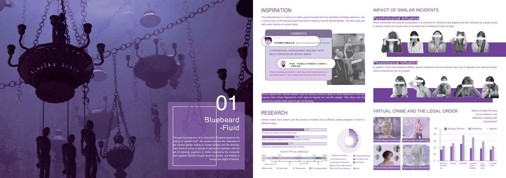

Immersive storytelling · Virtual interaction
Bluebeard–Fluid
Use a fictional world to question power and social roles.
An immersive narrative project exploring gender, power, and personal boundaries through a fictional virtual world.
The project addresses harassment and power through fictional storytelling. Its intended empathy-building effect has not been established by an outcome study.

A critical design question
The original project responds to the gap between harm experienced in a virtual space and how that harm is understood outside it. It uses a fictional narrative to invite reflection on power and social roles.
Design contribution
The original documentation traces research framing, world development, scene production, and an immersive narrative sequence. The work brings visual direction and interaction-led storytelling together in a critical design exploration.
